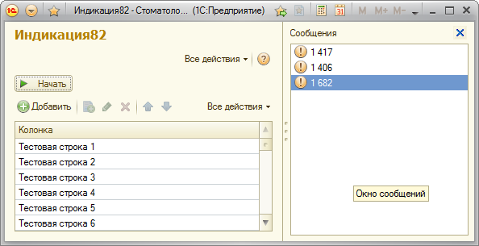

Эффективная индикация в 8.2
Об общих особенностях реализации индикации описано в публикации Правильная индикация прогресса цикла (tormozit)
В данной публикации хочу рассмотреть особенность реализации эффективной индикации для платформы 8.2. Новая платформа имеет ряд неприятных особенностей (неудобств) в реализации индикации. Индикация процесса может быть произведена только на стороне клиента (&НаКлиенте) равно как и прерывание процесса пользователем, а большая часть наиболее длительных операций выполняется на сервере (в большинстве случаев без возможности сделать аналогичное на клиенте)
На мой взгляд, индикацию необходимо осуществлять не более 1 раза в секунду (если время меньше секунды индикация не обязательна) чтобы минимизировать влияние вывода индикации на скорость (время) обработки и при этом информировать пользователя о процессе.
Требования эффективной индикации 8.2:
Чтобы удовлетворить поставленным требованиям необходимо осуществлять обработку данных порциями т.е. процедура на сервере выполняет процесс (цикл) и следит за временем, и возвращается на клиент для индикации далее снова вызов сервера и так до окончания работы. Данная схема позволит гибко управлять индикацией.
Для примера делаю обработку, которая при нажатии «Начать» добавляет 10000 строк в таблицу.
Код примерно следующий:
&НаКлиенте
Процедура Начать(Команда)
Таблица.Очистить();
НачалоЗамера = СчетчикВремениВМс();
СделаноСч = Сделать(1);
Пока СделаноСч <> Неопределено Цикл
Состояние("Процесс", СделаноСч/100);
СделаноСч = Сделать(СделаноСч);
КонецЦикла;
Сообщить(СчетчикВремениВМс() - НачалоЗамера);
КонецПроцедуры
&НаСервере
Функция Сделать(НачатьС)
ВремяНачала = ТекущаяДата();
Для Сч = НачатьС По 10000 Цикл
НоваяСтрока = Таблица.Добавить();
НоваяСтрока.Колонка = "Тестовая строка " + Сч;
Если ТекущаяДата() <> ВремяНачала Тогда
Возврат Сч+1;
КонецЕсли;
//Если Сч%100 = 0 Тогда
// Возврат Сч+1;
//КонецЕсли;
//Если Сч%1000 = 0 Тогда
// Возврат Сч+1;
//КонецЕсли;
КонецЦикла;
Возврат Неопределено;
КонецФункции
Характеристики различных вариантов реализации индикации в таблице:
|
Вариант |
Время, с |
Кол-во вызовов сервера
|
Трафик входящий, Кбайт |
Трафик исходящий, Кбайт
|
|
Обработка порциями с индикацией раз в секунду |
1,5 |
2 |
1196 |
2,7 |
|
Индикация каждые 100 строк |
17,9 |
101 |
1300 |
136,6 |
|
… каждые 1000 |
3,2 |
11 |
1206 |
14,9 |
|
Без индикации |
1,3 |
1 |
1195,7 |
1,4 |
Примечание: Платформа 8.2.11.229, конфигурации Athlon X2-2.2GHz, 4Gb, Windows 7 x64, файловая база
Вывод: Количество серверных вызовов очень сильно влияет на производительность и крайне важно уменьшать их количество, для получения высокой производительности.
Обработка порциями (приведенный пример):
Достоинства: код выполняется на сервере; можно управлять частотой вызовов сервера (раз в секунду, раз на 100 записей или произвольный)
Недостатки: не всегда код можно адаптировать к подобной схеме; более сложная реализация
p.s.
Для меня публикация носит исследовательский характер. Хотел выяснить стоит ли геморрой свеч :). Оказалось очень даже стоит особенности реализации: возврат значений для индикации, передача значения для продолжения оставил на потом.
Материалы на тему индикации:
Правильная индикация прогресса цикла (tormozit)
[8.2] Шаблон обработки с индикацией прогресса выполнения (управляемые формы) (dushelov)
Скриншоты
